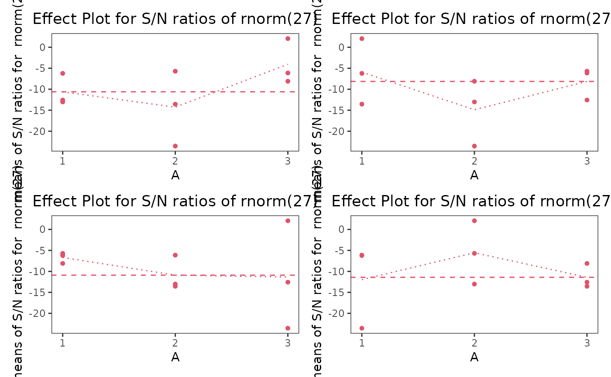

Creates a Signal-to-Noise Ratio plot for designs of type taguchiDesign.c with at least two replicates.
Usage
snPlot(object, type = "nominal", factors, fun = mean, response = NULL,
points = FALSE, classic = FALSE, lty, xlab, ylab,
main, ylim, l.col, p.col, ld.col, pch)Arguments
- object
An object of class
taguchiDesign.c.- type
A character string specifying the type of the Signal-to-Noise Ratio plot. Possible values are:
`nominal`: Nominal-the-best plot to equalize observed values to a nominal value.`smaller`: Smaller-the-better plot to minimize observed values.`larger`: Larger-the-better plot to maximize observed values.
Default is
`nominal`.- factors
The factors for which the effect plot is to be created.
- fun
A function for constructing the effect plot such as
mean,median, etc. Default ismean.- response
A character string specifying the response variable. If
objectcontains multiple responses, this parameter selects one column to plot. Default isNULL.- points
A logical value. If
TRUE, points are shown in addition to values derived fromfun. Default isFALSE.- classic
A logical value. If
TRUE, creates an effect plot as depicted in most textbooks. Default isFALSE.- lty
A numeric value specifying the line type to be used.
- xlab
A title for the x-axis.
- ylab
A title for the y-axis.
- main
An overall title for the plot.
- ylim
A numeric vector of length 2 specifying the limits of the y-axis.
- l.col
A color for the lines.
- p.col
A color for the points.
- ld.col
A color for the dashed line.
- pch
The symbol for plotting points.
Details
The Signal-to-Noise Ratio (SNR) is calculated based on the type specified:
`nominal`: $$SN = 10 \cdot log(mean(y) / var(y))$$`smaller`: $$SN = -10 \cdot log((1 / n) \cdot sum(y^2))$$`larger`: $$SN = -10 \cdot log((1 / n) \cdot sum(1 / y^2))$$
Signal-to-Noise Ratio plots are used to estimate the effects of individual factors and to judge the variance and validity of results from an effect plot.
Examples
tdo <- taguchiDesign("L9_3", replicates = 3)
tdo$.response(rnorm(27))
snPlot(tdo, points = TRUE, l.col = 2, p.col = 2, ld.col = 2, pch = 16, lty = 3)
